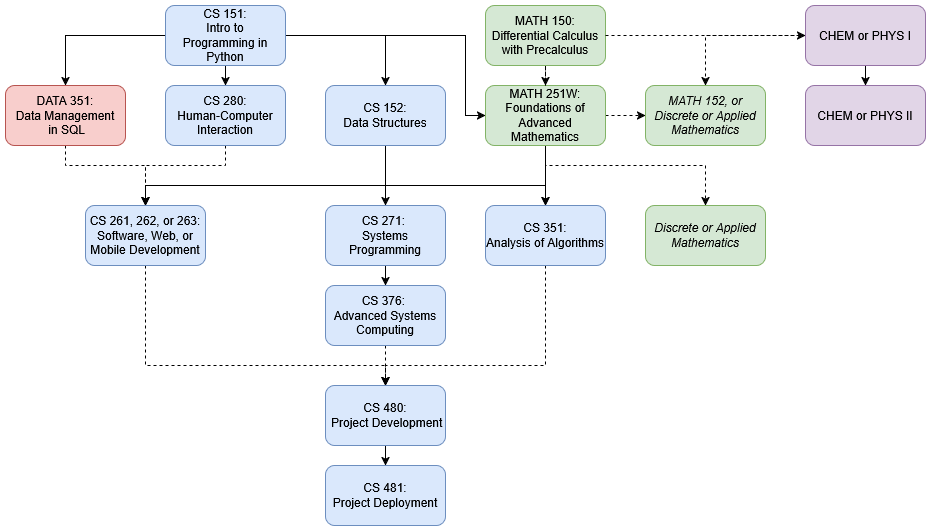

This is the intended CS major path and that we understand to be consistent with the guidelines from accreditation from ABET, the body which accredits engineering and technology degrees within the US.
BACHELORS OF SCIENCE
- 9 courses in Computer Science,
- 1 courses in Data Science,
- 4 courses in Mathematics,
- 2 courses in either Chemistry or Physics.
Due to the novelty of this program, interested students should contact Prof. Calvin Deutschbein (ckdeutschbein@willamette.edu) at earliest convenience.
B.S. Computer Science (66)
-
Computer Science Coursework (40)
-
Languages & Theory (12)
- CS__ 151 Introduction to Programming with Python (4)
- CS__ 152 Data Structures (4)
- CS__ 351 Analysis of Algorithms (4)
-
Human-Centered Computing-Based Systems (12)
- DATA 351 Data Management with SQL (4)
- Choose one courses from the following (4)
- CS__ 261 Software Development (4)
- CS__ 262 Web Development (4)
- CS__ 263 Mobile Development (4)
- CS__ 276 Advanced Collaborative Computing (4)
- CS__ 280 Foundations of Human-Computer Interaction (4)
-
Architecture, Organization (8)
- CS__ 271 Systems Programming and Computer Architecture (4)
- CS__ 371 Advanced Systems Computing (4)*
*CS 371 may be denoted as CS 376 in some cases due to a late number change. They are the same course.
-
Senior Experience (8)
- CS__ 480 Project Development (4)
- CS__ 481 Project Deployment (4)
-
Mathematics Coursework (16)
- MATH 251 Foundations of Advanced Mathematics (4)
- 12 additional credit hours of applied or discrete mathematics at the level of introductory calculus or
higher (12)
- MATH 150 Differential Calculus with Precalculus (4)
- MATH 152 Calculus II (4)
- MATH 249 Multivariable Calculus (4)
- MATH 256 Differential Equations (4)
- MATH 266 Probability and Statistics (4)
- MATH 280 Math for Data Science (4)
- MATH 352 Linear Algebra (4)
- MATH 345 Complex Variables (4)
- MATH 376 Topics in Mathematics (Topic Dependent) (4)
-
Natural Science for Science & Engineering with Lab (10)
- Choose one year of coursework (10)
- Physics
- PHYS 221(Y) Introductory Physics I (5)
- PHYS 222(Y) Introductory Physics II (5)
- Chemistry
- CHEM 115(Y) General Chemistry I (5)
- CHEM 116(Y) General Chemistry II (5)
Sample Four Year Plan
We provide a three year plan completing all major and graduation requirements. With a 3 year plan:
- Study abroad is viable in any semester (if you plan ahead).
- Many double major programs are viable, depending on the double major.
- Dual degree programs are situationally viable, consult the program in question.
- Starting in your 2nd year is viable.
First Year
Fall
| Number |
Name |
Requirement |
| IDS 101 |
College Colloquium |
GenEd (GE) Colloquium |
| CS 151 |
Intro to Programming |
BS CSE CS 1/10 |
| MATH 150 |
Calculus 1 |
MATH 1/4 & GE: MATSCI |
| SPAN 131 |
Spanish I |
GE: NEL (Non-English Language) 1/2 |
| Spring
| Number |
Name |
Requirement |
| ANTH 346 |
Technology and Society |
GE Social Science |
| CS 152 |
Data Structures |
CS 2/10 |
| MATH 152 |
Calculus 2 |
MATH 2/4 |
| SPAN 132 |
Spanish 2 |
GE NEL 2/2 |
|
Second Year
Fall
| Number |
Name |
Requirement |
| CS 280 |
Human Computer Int. |
CS 3/10 |
| DATA 351 |
Data Management in SQL |
CS 4/10 |
| MATH 251 |
Fndns Adv Math |
MATH 3/4 & Writing (W) 1/2 |
| SPAN 232 |
Int. Spanish 1 |
World Engagement (WE) 1/2 |
| Spring
| Number |
Name |
Requirement |
| HIST 131W |
Culture, Power, Society |
GE Arts and Humanities (AH) 1/2 |
| CCM 335W |
Comm. Self & Society |
GE AH 2/2, W 2/2, "PDE" |
| CS 261 |
Software Development |
CS 5/10 |
| SPAN 232 |
Int. Spanish 2 |
WE 2/2 |
|
Third Year
Fall
| Number |
Name |
Requirement |
| CS 271 |
Systems Programming |
CS 6/10 |
| CS 351 |
Algorithms |
CS 7/10 |
| CS 480 |
Project Development |
CS 8/10 |
| PHYS 221 |
Physics 1 |
BS CSE Science 1/2, GE Nat. Sci. 1/1 |
| Spring
| Number |
Name |
Requirement |
| CS 376 |
Operating Systems |
CS 9/10 |
| MATH 280 |
Math for Data Science |
MATH 4/4 |
| CS 480 |
Project Deployment |
CS 10/10 |
| PHYS 222 |
Physics 2 |
BS CSE Science 2/2 |
|
Dependency Graph
Dotted lines are soft pre-requisites.
- It is recommended to take DATA-351 for SQL experience prior to taking a software class.
- MATH 251W requires any 100 level computational or mathematical class, either CS 151 or MATH 150 is suitable.
- The applied mathematics courses have various requirements, usually MATH 150 or MATH 251.
- The "capstone" course CS 480 and CS 481 require any 5 CS courses (incl. DATA 351), but not necessarily the entire major.

keywords "Willamette Engineering" "Engineering Willamette" "Computer Science Engineering" "Computer Science and Engineering" "ABET" "Engineering Degree" "Willamette Engineering Degree"